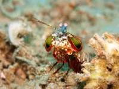

Fatos sobre o Stomatopoda
Camarão Briguento
O animal Odontodactylus scyllarus, Reino , Filo , Subfilo , Classe , Subclasse e Ordem.
Reino , Filo , Subfilo , Classe , Subclasse e OrdemReino , Filo , Subfilo , Classe , Subclasse e OrdemReino , Filo , Subfilo , Classe , Subclasse e OrdemReino , Filo , Subfilo , Classe , Subclasse e OrdemReino , Filo , Subfilo , Classe , Subclasse e OrdemReino , Filo , Subfilo , Classe , Subclasse e OrdemReino , Filo , Subfilo , Classe , Subclasse e OrdemReino , Filo , Subfilo , Classe , Subclasse e OrdemReino , Filo , Subfilo , Classe , Subclasse e OrdemReino , Filo , Subfilo , Classe , Subclasse e Ordem
Outro subtitulo
Reino , Filo , Subfilo , Classe , Subclasse e OrdemReino , Filo , Subfilo , Classe , Subclasse e OrdemReino , Filo , Subfilo , Classe , Subclasse e OrdemReino , Filo , Subfilo , Classe , Subclasse e OrdemReino , Filo , Subfilo , Classe , Subclasse e OrdemReino , Filo , Subfilo , Classe , Subclasse e Ordem
.jpeg)
E mais um subtitulo
Reino , Filo , Subfilo , Classe , Subclasse e OrdemReino , Filo , Subfilo , Classe , Subclasse e OrdemReino , Filo , Subfilo , Classe , Subclasse e OrdemReino , Filo , Subfilo , Classe , Subclasse e OrdemReino , Filo , Subfilo , Classe , Subclasse e Ordem
.jpeg)